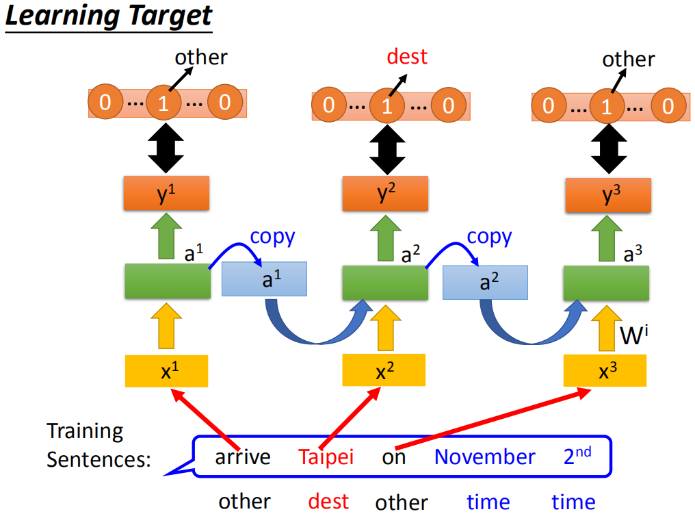
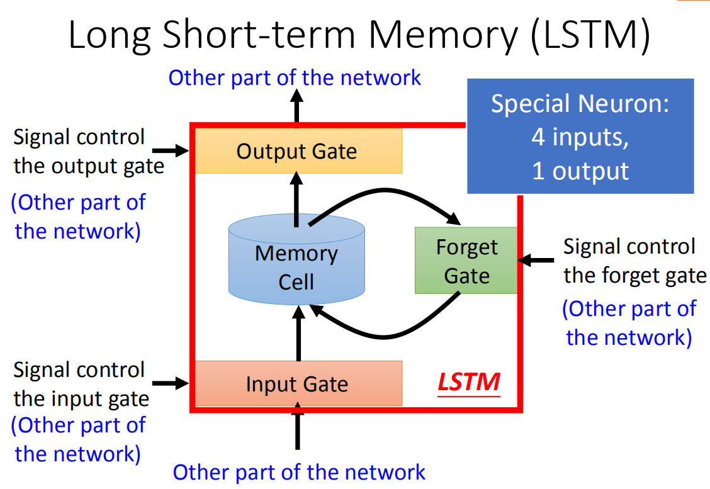
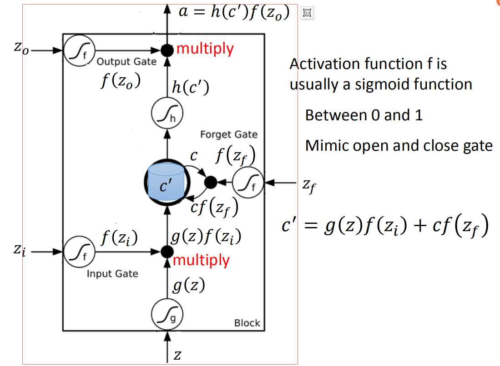

RNN基础
RNN(Recursive Neural Network)，是一种有记忆功能的神经网络。有时，在NLP用作客户信息的特征提取时，假如收到客户的一句话，比如I leave Taipei on Nov. 2nd，这句话里面Taipei应该被识别为出发地，Nov.和2nd应该被识别为时间。
假如我们按照CNN的方式，用字符串hash类似的方法，将这些单词分割，然后丢进DNN里面训练。那假设效果非常好，每输入像Taipei、Canton、Beijing这样的词的时候都被识别为出发地。可是现在突然来了一条新句子I arrive Taipei on Nov. 2nd。
那就麻烦了，现在Taipei应该被识别为目的地，而关键因素是地点前面的那个动词。所以，像以前的提取，都需要考虑一个完整的句子信息。如果想用deep的方式处理这种问题，只挑出每个词语那样是行不通的，因为要考虑以前的状态。所以，有人就提出了由有记忆能力的神经元组成的神经网络RNN。

RNN的每个神经元都有着一个记忆单元c，然后也是按照传统DNN的方式，可以级联从而达到deep learning。但是，基本的RNN确实是太过于简单，因为每个记忆单元的影响都是持久的。假如在输入时，都将记忆单元乘上一个固定参数，当时，它的值会趋向于，反过来当比1要大时，只要对c做一点点小小的变化，最终的结果都会变得很大。这就是naive rnn带来的梯度爆炸和梯度消失的问题。
所以有人就提出了LSTM来缓解这种问题。
Long short-term memory(LSTM)

LSTM相对传统RNN的神经元比起来相对复杂不少，除了存储单元以及输入输出外还有着三个门，也就是控制输入数据的输入门、控制输出数据的输出门、选择遗忘数据的遗忘门。假如输入门关闭，则数据无法进入存储单元；假如遗忘门关了，数据会被归零；假如输出门关了，数据就无法输出。

在实际实现的时候，其实并没有绝对的开门和关门，它是以一个浮点数的形式表示的。它其实就是先对输入数据做某种运算，然后再取sigmoid函数，之前在逻辑回归时也知道了，sigmoid的值域是正好能代表门的开启关闭状态。
输入门的控制变量都是由训练数据、存储数据、上一输出数据变换的来的，得到的就是各种的。当经过输入门变换，然后用于控制输入门的变量经过变换后得到。那在进入存储单元之前，得到的变量就是。
接着在进入存储单元时，被遗忘门转换后的与原本的存储单元值相乘，得到，其实也就是存储单元的值剩下了多少；然后在与输入门那里得到的值相加就得到下一阶段的存储单元值。
接下来在输出前，由于得到的是个线性变换，因此还是得乘上一个激活函数变换一下得到，接着再与输出门的数据相乘就得到了输出
在接下来我们在深度学习中所需要做的就是用LSTM提到普通的神经元，然后进行训练就行了。